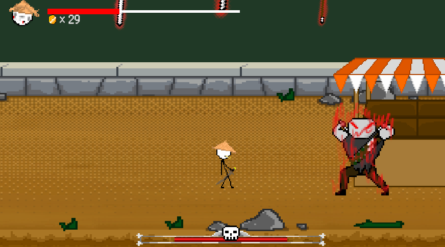
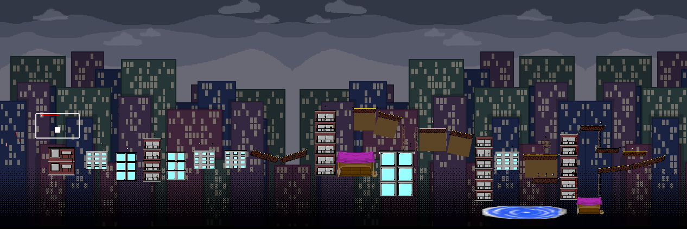

The Last Stick (Unity)

2D level-based platformer with quirky movement mechanics, unique boss fights, and an inventory/resource management system.
Team: Worked with a team of 4 people.
Responsibilities: Wrote over 30 scripts in C# to implement core gameplay mechanics such as player movement, boss fight logic, inventory management, health and damage systems, and UI updates. Additionally, I was responsible for designing and implementing the game's levels using game objects and given art assets.
Tech: Unity, C#
Process
Boss One Prototype

Boss Two Fight Prototype
Level Two Design

Summary of Contributions
Sword Stand Movement Mechanic
On top of implementing the basic left and right basic player attacks, I implemented a sword stand movement mechanic that enables vertical mobility through external sword interactions by exposing a dedicated SwordJump() method. This method directly modifies the player's Rigidbody2D vertical velocity, allowing the mechanic to bypass standard grounded checks and internal jump state logic. Designed the system to be decoupled from the default jump pipeline, enabling it to be triggered by combat events such as sword collisions or abilities. This approach supports advanced movement techniques like mid-air repositioning and chaining mobility actions.
Level One Boss
Implemented a boss AI system using a state-driven architecture that dynamically switches between melee (ground slam), ranged (projectile throw), and recovery (weapon retrieval) behaviors based on player distance and internal state flags. The boss utilizes coroutine-based attack sequencing to synchronize animations, warning zones, and timed hitbox activation, ensuring clear player feedback and precise damage windows.
Developed a physics-integrated weapon system where the boss can throw a sword as a projectile with deterministic horizontal targeting, dynamic Rigidbody2D velocity control, and boomerang-style return logic. The sword transitions between multiple states (held, flying, stuck, returning), with collision-based state changes triggering retrieval behavior and reintegration into the boss's attack cycle.
Additionally, implemented collision filtering and movement constraints during attacks to enforce commitment and readability. This system tightly couples combat logic, animation state management, and physics interactions.
Level Two Boss
Developed a multi-phase boss AI system combining state-driven behavior, coroutine-based attack sequencing, and event-driven coordination across multiple subsystems. The boss dynamically transitions between movement, dash attacks, and large-scale summon attacks based on player distance, cooldown timers, and internal state flags, ensuring non-overlapping behaviors and clear combat readability.
Implemented a charge-based dash attack with direction locking, execution, and recovery phases. The system uses precise Rigidbody2D velocity control during execution and applies post-attack stun states to enforce commitment and balance risk/reward. Collision-based damage is applied to the player.
Designed a large-scale summon attack system that spawns a high volume of falling projectiles across the arena using evenly distributed positions with randomized sequencing (Fisher-Yates shuffle). Integrated event callbacks (onChargingChanged) to synchronize attack with animation states, improving player feedback and anticipation.
Additionally, built a coordinated floating sword subsystem that executes timed dive attack patterns using staggered coroutines, creating layered attack pressure. This system operates independently but in parallel with the boss controller.
Level Two Design | Base Level Enemies
Designed and implemented a vertically layered level focused on precision platforming and combat integration, utilizing physics-based traversal and systemic player feedback. Incorporated bounce materials on 2D colliders to create dynamic movement interactions, requiring players to manage momentum and positioning across multi-tiered apartment-style platforms.
Integrated a checkpoint/reset system that repositions the player upon failure and programmatically resets active enemy states (despawning flying sword enemies and clearing velocity), ensuring consistent retry conditions and maintaining gameplay flow.
Developed enemy encounters with state-driven AI, including melee and ranged variants that use distance-based behavior switching, coroutine-driven attacks, and cooldown-managed ability execution. Implemented ledge detection via raycasting to prevent enemies from falling off platforms, improving navigation reliability in a vertical environment.
designed traversal challenges that require mastery of the Sword Stand movement mechanic, including timed jumps and spacing-based sequences, reinforcing the core movement system through level design and creating a cohesive relationship between player mechanics and environment layout.
What I Learned
State-Driven AI and Coroutines
Designing enemy and boss behaviors taught me how to structure state-driven systems using booleans, timers, and coroutines to manage complex attack patterns.
I learned how to sequence actions like charge-ups, attacks, and recovery phases while preventing overlap between states, which improved both gameplay clarity and code organization.
Physics-Based Movement and Control
Working with Rigidbody2D helped me understand how to achieve responsive and deterministic movement by directly controlling velocity instead of relying on forces.
I also gained experience with collision handling, hit detection, and conditional interactions, which are critical for tight combat systems.
This experience made me understand decoupled design patterns and how to build systems that are more flexible and clean.
Modular System Design
Building mechanics like the Sword Stand and multi-component boss systems reinforced the importance of decoupling systems.
By exposing functionality through public methods and events, I was able to connect movement, combat, and AI without tightly coupling scripts, making the systems more reusable and scalable.
Level Design Integration
Designing Level 2 helped me understand how to build environments that reinforce core mechanics.
By incorporating vertical platforming, bounce physics, and timed jumps requiring the Sword Stand mechanic, I learned how to guide players toward mastering movement systems through level layout.